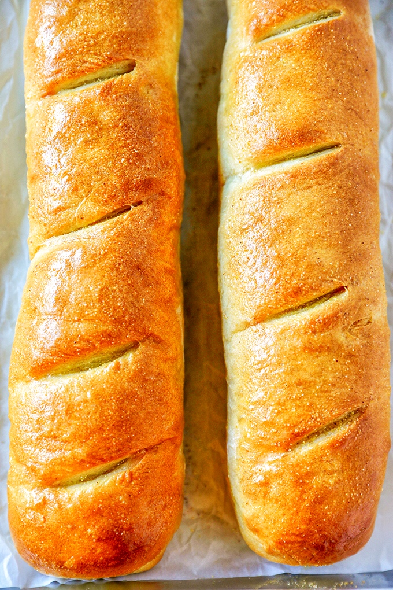

Baguette Recipe

Bake warm, crusty French baguettes at home with this easy bread recipe.
Ingredients
- 1 package dry yeast (about 2 1/4 teaspoons)
- 1¼ cups warm water (100° to 110°)
- 3 cups bread flour, divided (about 14 1/4 ounces)
- 1 teaspoon salt
- Cooking spray
- 1 teaspoon cornmeal
Steps
- Dissolve yeast in warm water in a large bowl
-
Place dough in large bowl coated with cooking spray, turning to coat top
- Preheat oven to 450°.
-
Uncover the dough. Cut 3 (1/4-inch-deep) diagonal slits across top of
each loaf. Bake at 450° for 20 minutes or until browned on bottom and
sounds hollow when tapped.